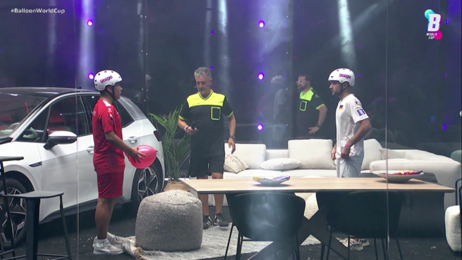

Throughout the COVID-19 lockdowns, people came up with extremely creative and fun games to keep themselves occupied and entertained. The activity which we noticed gaining the most traction was a game called "Balloon Keepy Uppy". Due to the interest in this game, students came forward and proposed a new sports club. The goal of this club is to provide a fun way for people to exercise and clear their minds from the COVID-19 pandemic and stress of examinations while potentially, going even further to create a team to represent the Univesity in competitions.
You may remember having played this game unbeknownst to yourself with your siblings be that with leftover balloons from one of your birthday parties or a takeaway balloon from McDonald's. So you may already be an expert at the sport already so why not give it a shot?
The rules are simple - there are only two:
Training will take place inside the MTU gym and will be on twice a week from 19:00-20:00 on Tuesday and Thursday.
A map to the gym has been provided below:

In order to register your interest and sign up for the club, please follow our link here Memberships Page, which prompt you to enter your information.

Due to the complications of the COVID-19 pandemic, the following restrictions and guidelines will still be in place:
For the most up to date COVID-19 information, please check the HSE website.
You're probably thinking, "Wait, what? I thought this was a sports club?" and you're right however, we're also aware that sports aren't for everyone but that doesn't mean we don't want you to join our club and be involved.
If you have an interest in art, why don't you sign up anyway and we can set up a team who will be responsible for creating and designing a space for these matches to take place!

You can see from the image above that these sets can literally be anything you can imagine so why not get creative and join the club?